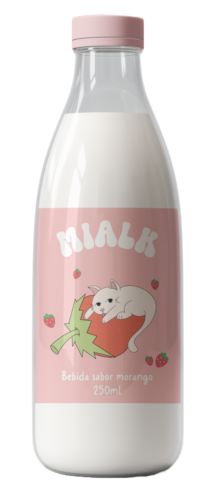
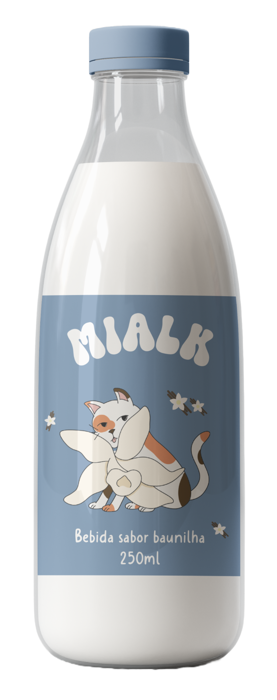
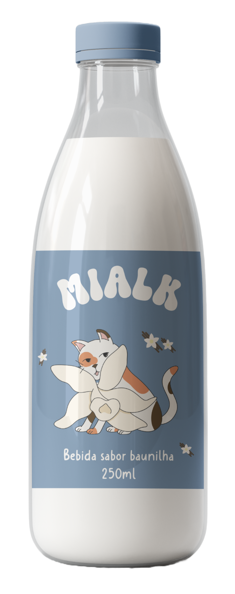
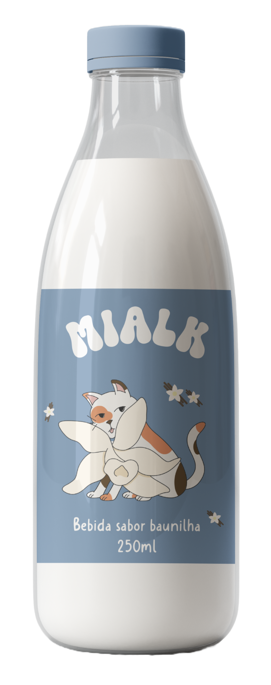

Nossa garrafinha também cuida do planeta!
A embalagem da nossa bebida é feita com um plástico especial chamado HDPE. Ele é seguro, resistente e muito usado em produtos para crianças, como garrafinhas de leite e sucos.
Mas o mais legal é que o HDPE é 100% reciclável! Isso quer dizer que, depois de usar, você pode jogar no lixo correto e ele pode ser transformado em novos produtos, ajudando a natureza e evitando o desperdício.
Ensinar as crianças a reciclar é uma forma simples e poderosa de mostrar como nossas escolhas fazem a diferença.
Cuidar do planeta é um trabalho de todos – inclusive dos pequenos!

 

